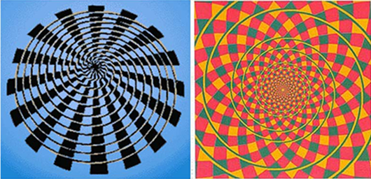

Zähle die schwarzen Punkte.
Sinnestäuschungen (= Virtuelle Realität) http://www.planet-wissen.de/
Zähle die schwarzen Punkte.

Sind da blaue Punkte zwischen den Kästchen?

Kreise oder Spirale?

Eine Spirale? Ganz sicher?